How to host rules-enforced Commander games in Tabletop Simulator, step by step, with pictures.
MTG Companion is a small Windows program. One double-click starts everything the rules engine needs
(Docker, the Forge engine, the bridge) and shows six status lights on a page in your web browser. When all six are
green, you load the table in Tabletop Simulator and play.
Only the host needs this.
Your friends join your Tabletop Simulator game like any other. They install nothing of ours.
What you need
Windows 10 or 11, x64An Intel or AMD processor. Windows on ARM (Snapdragon laptops) can't run the engine.
Tabletop SimulatorBought on Steam.
Docker DesktopFree. It runs the rules engine. Step 1 shows how.
Disk spaceAbout 1.5 GB inside Docker plus about 400 MB for the MTG folder.
The MTG packageA .zip from the project's Releases page. The project is invite-only: ask its owner for access.
Not availableNo Mac or Linux version exists. The app isn't code-signed (Step 3 explains the warning).
Contents
How the pieces fit
Step 1: Install Docker Desktop
Step 2: Unblock and unzip the package
Step 3: Start MTG Companion
Step 4: The first start
Step 5: All six lights green
Step 6: Load the table in TTS
Step 7: Friends join, start a game
During a game
Table tools: AI seats
Table tools: debug tools
Buttons, tray icon, end of the night
Updates
When a light is red
Troubleshooting, light by light
Good to know
Every sentence the app shows is quoted from its source code (companion/src, 2026-11-12). Picture labels:
REAL a real screenshot,
REAL PAGE · EXAMPLE the app's real status page showing example lights,
DIAGRAM a drawing, not a screenshot.
Before you start
How the pieces fit
You don't have to understand this to play, but it explains what the six lights are about.
Diagram
The six lights are the six start steps
Light
What it checks
1. Docker
Docker Desktop is running and answering, set to Linux containers.
2. Engine images
The engine is loaded into Docker (the first start loads it from the package: a few minutes).
3. Engine stack
The relay and the Forge room are running, and the game room tts-commander is open.
4. Table save
The table is copied into your TTS saves as "MTG Table (rules engine)". It never overwrites a save it didn't put there.
5. Bridge
The bridge (the translator between the engine and TTS) is running. If it ever stops, it restarts by itself after 3 seconds.
6. TTS
Tabletop Simulator is running and this package's table is loaded in it.
Colours: green = OK, amber = Check,
red = Problem, blue = Working (wait), grey = not checked yet or stopped.
1
Install Docker Desktop (once)
Docker runs the rules engine on your PC. You only install it once.
Download Docker Desktop yourself from docker.com/products/docker-desktop and install it.
Start it once and finish its first-run screens. Signing in to Docker is optional.
If it asks to accept its terms or to update WSL (Windows' Linux layer, which Docker uses), do both and let it finish.
Sign out of Windows and back in (or restart the PC). The install adds you to the "docker-users" group, and that only counts after a new sign-in.
Before game night, start Docker Desktop and wait until it says it is running. (If you forget, MTG Companion starts it for you and waits up to 3 minutes.)
Diagram · the idea, not Docker's real window
Docker Desktop— ☐ ✕
Docker Desktop is running (no longer "starting")
The exact look of Docker's window changes between Docker versions. What matters is that Docker no longer
says it is starting. MTG Companion's Docker light turning green is the real test.
Docker must use Linux containers (the default).
If the Docker light says "Docker is set to Windows containers": right-click the Docker icon by the clock,
choose Switch to Linux containers, then press Try again.
Optional: keep Tabletop Simulator smooth.
The status page has a button Limit Docker's CPU use…. It gives Docker 2 CPU cores and 8 GB of memory, so TTS
doesn't have to share every core with the engine. It writes a settings file (%USERPROFILE%\.wslconfig, after saving a copy
of the old one), affects every WSL program on the PC, and only takes effect after WSL restarts (for example a PC restart). It asks
before writing and restarts nothing.
2
Unblock and unzip the package
The package is a file named like MTG-Table-<date>-<hash>.zip from the project's Releases page on GitHub.
Before unzipping: right-click the .zip → Properties → tick Unblock → OK.
Unzip the whole folder into a plain folder of its own, for example C:\Games\MTG-Table.
Don't use OneDrive, Documents or Program Files (synced or protected folders get in the way), and don't run it from inside the zip.
Diagram · the zip's Properties window
MTG-Table-….zip Properties✕
General Security Details
Type of file: Compressed (zipped) Folder
Security: This file came from another computer and might be blocked to help protect this computer.
☑ Unblock
OKCancel
Diagram · the unzipped folder
C:\Games\MTG-Table\
├─ MTG Companion.exe ← double-click this
├─ README-FRIEND.txt
├─ version.json
├─ bridge\ decks\ scenarios\
├─ images\mtg-images.tar (the engine)
├─ table\MTG Table.json
├─ runtime\ stack\ manabrew\
├─ logs\ (fills up as it runs)
└─ LICENSES\
The list follows the packager (tools/make-friend-package.js).
Why Unblock?
MTG Companion.exe isn't code-signed. Unblocking the zip first makes Windows' warnings in Step 3 less likely.
README-FRIEND.txt in the folder has the same instructions in plain text.
3
Start MTG Companion
Double-click MTG Companion.exe in the folder. It never asks for administrator rights.
Windows may show a blue "Windows protected your PC" box, because the app isn't signed:
Diagram · SmartScreen (drawn, not a screenshot)
Windows protected your PC
Microsoft Defender SmartScreen prevented an unrecognized app from starting…
Delete the unzipped folder, do the Unblock step on the .zip (Step 2), and unzip again.
Still blocked: Smart App Control won't run unsigned programs on this PC, and the companion only runs with it off
(Windows Security → App & browser control). That is your decision to make: on many PCs it can't be turned back on
without resetting Windows.
What happens next
A small MTG icon appears in the tray by the clock (its colour is the worst light).
On the very first start, the status page opens in your default browser by itself. Later it opens by itself only if a light
ends up red. You can always open it from the tray icon (click it, or right-click → Open status), or type
http://127.0.0.1:48790 in the browser.
Starting it a second time doesn't start a second copy: the running one shows itself.
4
The first start: wait for the lights
The companion runs the six steps in order. The first start takes a few minutes, mostly for step 2.
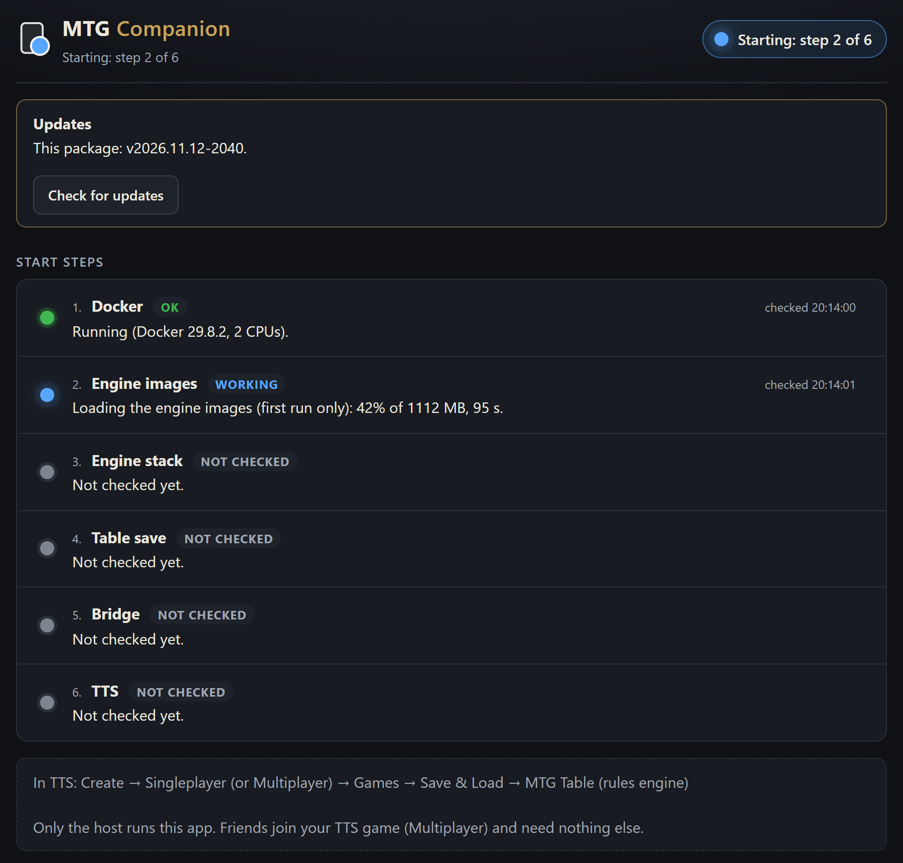
REAL PAGE · EXAMPLEStep 2 is loading the engine into Docker; the blue light means "working, wait".
Steps 3 to 6 haven't been checked yet.
Docker first: if Docker Desktop isn't running, the companion starts it and waits up to 3 minutes. If Docker opens a window asking for something, answer it.
Engine images: the first time, it loads images\mtg-images.tar into Docker, with a percentage.
Engine stack: starts the relay and the Forge room. It can take up to 5 minutes on a cold start.
Table save: copies the table into TTS's Saves folder. Bridge: starts the bridge. TTS: opens Tabletop Simulator through Steam if it isn't running.
You don't need to babysit it.
If a step stops on a problem and you fix it (for example by starting Docker yourself), the companion notices the light turn green and carries on by itself.
5
All six lights green
This is what "ready" looks like. The top-right badge says Ready.
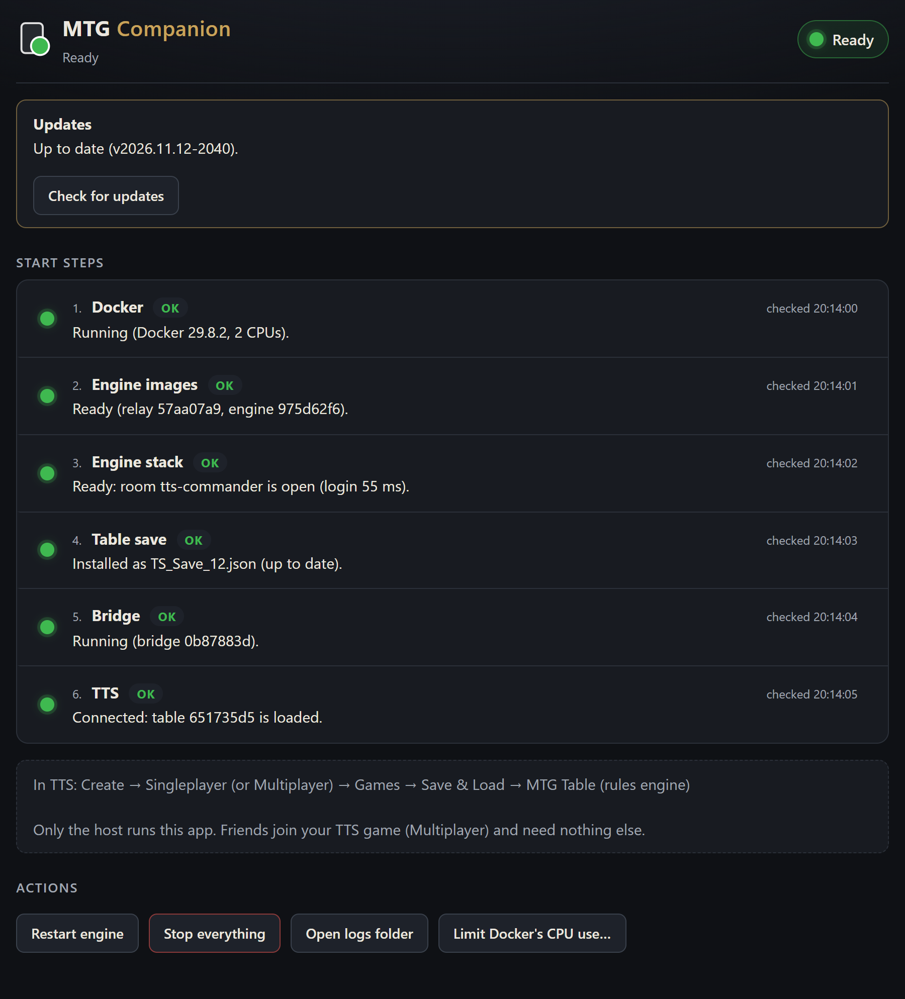
REAL PAGE · EXAMPLEAll six lights green. The dashed box under the lights is the hint line;
the buttons under ACTIONS are explained later.
The TTS light is the last one, and it stays amber until you load the table.
That is normal: on game night, everything but TTS goes green first. Step 6 turns it green.
6
Load the table in Tabletop Simulator
With TTS running, the TTS light is amber and tells you exactly what to do:
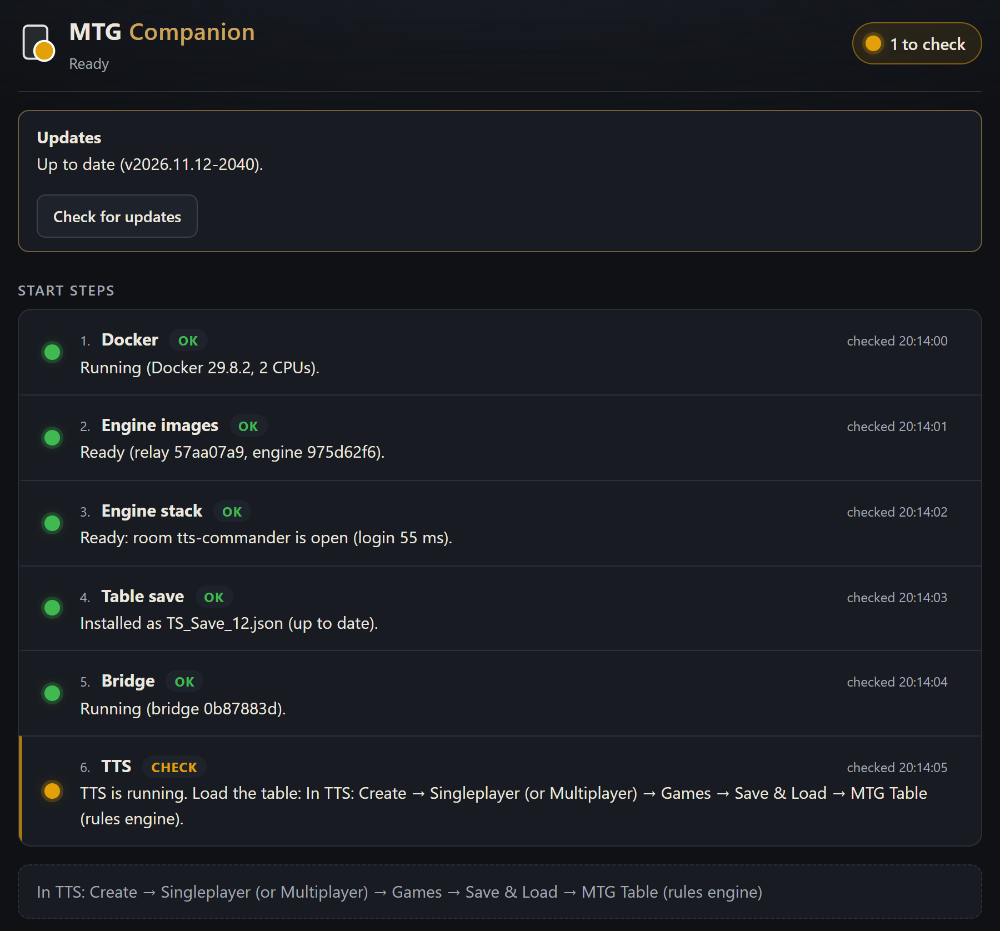
REAL PAGE · EXAMPLE"TTS is running. Load the table: In TTS: Create → Singleplayer (or Multiplayer) → Games → Save & Load → MTG Table (rules engine)."
Pick Multiplayer so friends can join. Singleplayer is for playing alone against the AI.
Games is a button on TTS's top bar once you are at a table:
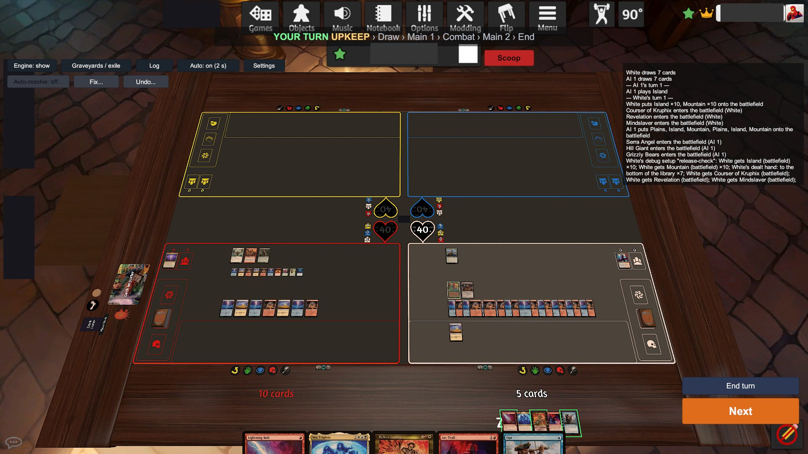
REALTTS's top bar (crop of a real TTS capture, 2026-11-10). "Games" is the first button.
When it worked
The TTS light turns green: "Connected: table … is loaded." The light only goes green once the table has
talked to the bridge, so a TTS sitting on its main menu stays amber.
7
Friends join, start a game
Friends join your server: a Steam invite, or the TTS server browser. They need nothing but TTS.
Everyone sits at a colour (White, Red, Yellow, Blue) and brings a deck with the table's Card Importer.
Turn the engine on with the middle tile (Engine: on), or type mtg engine on in chat.
Everyone presses READY? on their playmat. Green READY = good to go; red FIX DECK = the chat says what's wrong.
Press Start on the middle tile. Against the computer: type mtg start ai 1 in chat (up to 3 AI players).
REALThe table during a test game (one person against one Forge AI, 2026-11-10). Top left: the table's own buttons
(Engine: show, Graveyards / exile, Log, Auto, Settings, Auto-resolve, Fix…, Undo…). Bottom right: the big orange Next button,
your main answer to the engine. Right: the game log.
How to play once the game is on (casting by dragging, the orange button, attacking, undo) is in HOW-TO-PLAY.md; this guide covers the companion.
While you play
During a game
Keep the companion running. It watches the lights every few seconds and never restarts anything while a game is on.
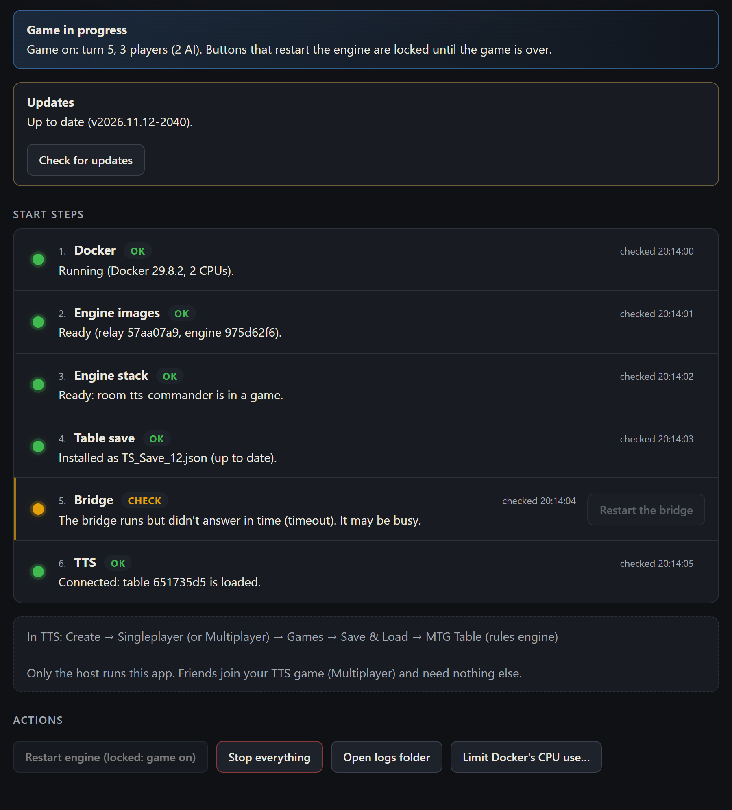
REAL PAGE · EXAMPLEThe blue Game in progress banner. The Bridge light here is amber, but its
Restart the bridge button is greyed out, and so is Restart engine (locked: game on).
Locked during a game: Load the engine, Start the engine / Restart relay and room, Restart the bridge, Restart engine,
installing an update and updating the table save. Pressing one says "Locked: a game is on. Do this after the game."
If the companion can't tell whether a game is on, it locks the same way ("Locked: can't tell whether a game is on. Try again in a minute.").
Stop everything still works, but asks twice: "Stopping everything ends that game for everyone. Stop anyway?"
A game that was set up or just finished also counts. To unlock, type mtg reset in TTS chat.
Table tools · part 1
AI seats: who plays an empty seat
At the bottom of the status page, click ▸ Table tools: AI seats and debug tools to open it.
For each colour nobody sits at, choose who plays it in every game:
None: no AI set; the AI count you give at Start decides (mtg start ai 1).
Harmless bot: keeps its hand, passes, and never attacks or blocks. Good for learning or testing.
Forge AI: a real opponent. It needs a deck.
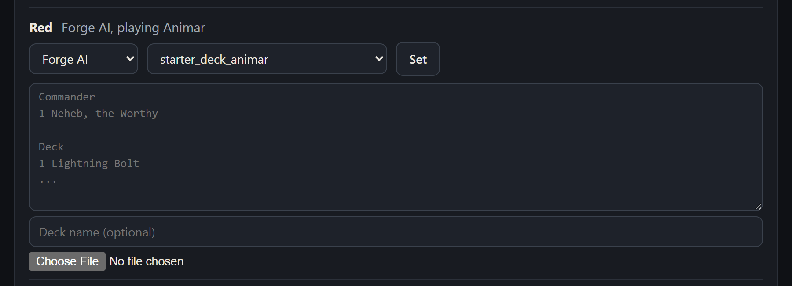
REAL PAGE · EXAMPLERed set to a Forge AI playing the "Animar" deck. Pick who plays it, pick a deck, press Set.
Choosing a deck
One of the engine's decks from the list (the project's decks, then Manabrew's ready-made decks), or
Deck list or file…: paste a deck list in the box, or pick a .txt/.dek/.dck file. Mark the commander with a
Commander line above it, or *CMDR* after it. Lines like 1 Sol Ring, 1x Sol Ring and
Sol Ring (CMM) 410 *F* all work; Sideboard/Maybeboard parts are skipped. The bridge checks every card is known to the
engine. It does not check the deck size.
When it applies
"An AI seat applies from the next game." The choice stays from game to game until the bridge restarts, and it wins over
mtg aideck and any deck lying in that seat. If a person sits at that colour, the person plays.
On the current page every seat shows the deck-list box, even when no list is chosen; only the box under the seat
set to "Deck list or file…" is used.
Table tools · part 2
Debug tools: fix the board by hand
For when something went wrong, or to set up a situation to try out. Tick Debug tools on. Everyone at the table is told in chat.
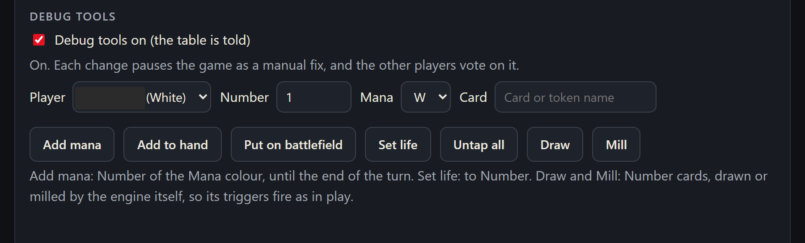
REAL PAGE · EXAMPLEDebug tools switched on during a game.
Button
What it does (pick the Player first)
Add mana
Number mana of the Mana colour (W, U, B, R, G or C), 1 to 99, until the end of the turn.
Add to hand
The card named in Card goes into that player's hand.
Put on battlefield
The card or token named in Card goes onto the battlefield.
Set life
Life total to Number (0 to 999).
Untap all
Untaps everything that player controls.
Draw / Mill
Number cards (1 to 99), drawn or milled by the engine itself, so triggers fire as in play.
These two are new (2026-11-12): the buttons show only when your package's bridge offers them, and they need an engine built with them.
Each change is a vote
Every button press pauses the game as a manual fix, and the other players vote on it. The tools work only while a table game is running,
and not while another fix is under way. Debug tools switch off every time the bridge starts.
Everyday controls
Buttons, tray icon, end of the night
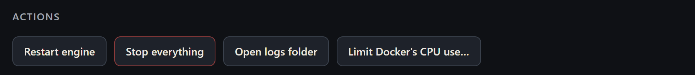
REAL PAGE · EXAMPLEThe ACTIONS row on the status page.
Button
What it does
Restart engine
Stops the bridge, restarts the relay and the Forge room, then starts the bridge again (under a minute). Locked during a game.
Stop everything
Stops the bridge and the engine containers. Docker Desktop and TTS keep running. Afterwards use Restart engine to bring it back.
Open logs folder
Opens the logs folder (companion.log, bridge.log), the files to send if you need help.
Limit Docker's CPU use…
Optional; see Step 1.
Tray icon (by the clock)
Left-click opens the status page. Right-click shows the menu. Hovering shows "MTG: ready", "game on", "N to check" or "MTG: <light> problem".
A light turning red also pops up a notice (at most once per light per 10 minutes); click it to open the page.
End of the night
Press Stop everything, or just shut down the PC.
Quit in the tray asks: Yes = quit and leave the engine and bridge running (a game in progress carries on);
No = stop everything first, then quit; Cancel.
If Windows says "Finishing update…" at shutdown, let it finish (a minute or two). If the PC went off anyway, the next start puts the
package back as it was before the update.
Diagram · tray menu (right-click)
Open status
Open logs folder
Package v… (the version)
Check for updates
GitHub token…
Restart engine
Stop everything
Quit
Items as in StatusForm.cs.
Staying current
Updates
The companion can update itself from signed releases. It only downloads the parts that changed.
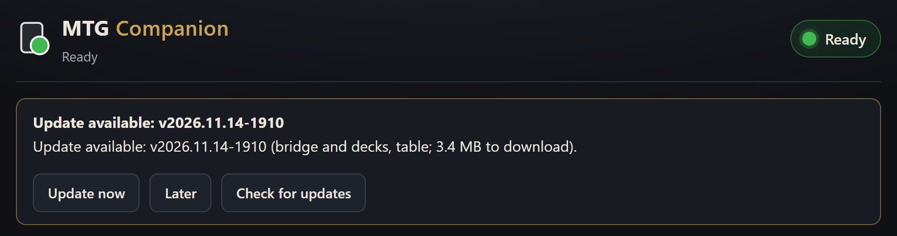
REAL PAGE · EXAMPLEAn update is offered: Update now, Later, Check for updates.
It checks at start, at most every 6 hours, and when you press Check for updates.
Update now: the bridge stops for a minute while it installs. During a game it only downloads, then installs 2 minutes after the game ends.
Every update is checked against the project's signing key before it is used. If an install fails, it is undone: "The update failed and was undone".
The previous version's files are kept for an undo (about 400 MB stays; an update needs up to about 700 MB while it installs).
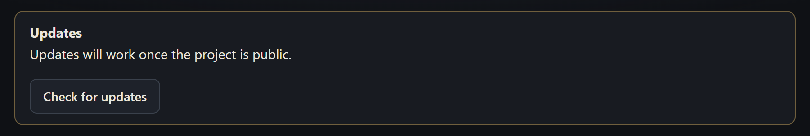
REAL PAGE · EXAMPLEWhat you see today, while the project is private.
While the project is private, automatic updates don't work for you yet.
The page says "Updates will work once the project is public." That is never a red light; the table still works.
Until then, the owner either sends you a new zip, or gives you a GitHub token to enter with the tray's GitHub token…
(stored encrypted for your Windows account, sent only to GitHub). Which of the two is still being decided.
Troubleshooting
When a light is red
A red light names the problem in one sentence and, usually, shows one gold button that fixes it. Press it.
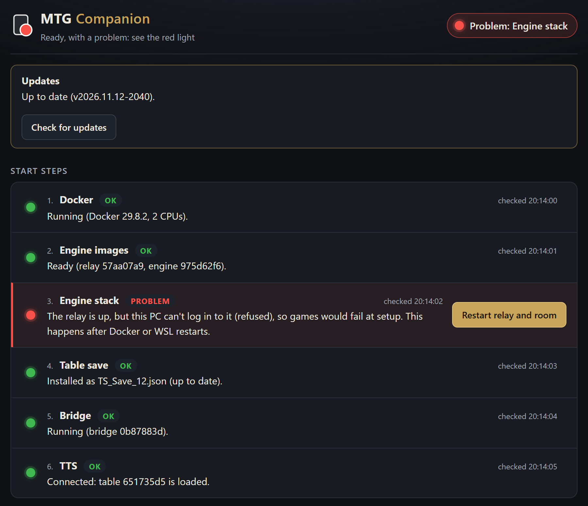
REAL PAGE · EXAMPLEThe badge says Problem: Engine stack. The gold Restart relay and room
button is the fix (it asks first: "Restart the relay and the Forge room (about 20 s)?").
Read the red light's sentence. Do what it says (it is written for you, not for a programmer).
Press its gold button. Buttons that restart things are locked during a game, so a fix never ends a game by surprise.
Still stuck: quit the companion (tray → Quit) and start it again.
Still stuck: Open logs folder and send the files to whoever gave you the package.
Amber is not an emergency.
Amber means "check this": often it is waiting for you (load the table) or for the game to end (a newer engine or table loads after the game).
The page says "Companion not running"?
"Start MTG Companion.exe again. This page reconnects by itself." A short "Companion busy, retrying" is normal while it works.
Troubleshooting
Light by light: what it says, what to do
Sentences in italics are the app's own words (shortened with … where long). [Button] is the gold button the light shows.
1Docker
The light says
Do this
Docker isn't running.[Start Docker Desktop] (amber instead if Docker Desktop is open but its engine isn't answering yet)
Press the button, wait a minute.
Docker Desktop didn't answer within 3 minutes. Open its window and finish anything it asks (agreement, sign-in, a WSL update or a restart), then press the button.[Start Docker Desktop]
Open Docker's window, answer what it asks, press the button.
Docker Desktop is running, but Windows doesn't let this account use it yet…[Try again]
Sign out of Windows and back in (or restart), then Try again.
Docker is set to Windows containers…[Try again]
Right-click the Docker icon by the clock → Switch to Linux containers → Try again.
Install or start Docker Desktop (Step 1), then Try again.
2Engine images
The light says
Do this
Loading the engine images (first run only): 42% of … MB…
Wait. First start only.
This package has a newer engine; it loads after the game.
Nothing; it happens after the game.
Loaded, but the image ids differ from this package's version.json… Games may still work; tell whoever sent the package.
Play on; mention it to the owner.
The engine images differ from this package…[Load the engine images]
Press it between games.
Loading the engine images didn't work. The log (Open logs folder, companion.log) has Docker's message.[Load the engine again]
Press it. If it fails again, send the logs.
The engine file (images\mtg-images.tar) is missing from the package. Unzip the package again…[Try again]
Unzip the whole package again (Step 2).
3Engine stack
The light says
Do this
The engine isn't running (no relay container). / The Forge room container isn't running.[Start the engine]
Press it.
The relay is up, but this PC can't log in to it… This happens after Docker or WSL restarts.[Restart relay and room]
Press it. Common after the PC slept or Docker restarted.
The room is busy with an earlier game, so a new start would be refused.[Restart relay and room]
If a game was being set up, type mtg reset in TTS chat first, then press it.
The relay's own health check fails. / The engine didn't get ready within 5 minutes…[Restart relay and room]
Press it.
Port 9443 is taken, most likely by another copy of the MTG engine…
Stop the other copy (Stop everything in its MTG Companion), then press the button.
The relay refused the key… A MANABREW_SERVER_KEY setting on this PC… remove it, press Stop everything, then start again.
Rare: ask the owner.
4Table save
The light says
Do this
A newer table is in this package; it installs after the game.
Nothing; it happens after the game.
table\MTG Table.json is missing from the package. Unzip the package again, then press Try again.[Try again]
Unzip again (Step 2), then Try again.
Couldn't install the table save: …[Try again]
Try again; if it repeats, send the logs.
5Bridge
The light says
Do this
The bridge isn't running. / The bridge didn't start… Last log lines: …[Start the bridge]
Press it.
… is using port 39998, which the bridge needs. This is usually the Tabletop Simulator extension in VS Code or Atom: close that program, then press Try again.[Show the program]
Close VS Code / Atom. The button opens Task Manager: find the process number from the sentence on the Details tab and close it yourself.
Another MTG bridge is already running… Stop it first (Stop everything in the MTG Companion of that other copy)…[Try again]
An older copy of the folder is running: stop it there.
This folder can't be written to… Move the whole folder somewhere you can write, such as C:\Games\MTG-Table…[Try again]
Move the folder (Step 2) and start the .exe from there.
Running, but it isn't this package's bridge (…). Restart it between games.[Restart the bridge]
Press it between games.
The bridge runs but didn't answer in time (…). It may be busy.[Restart the bridge]
Usually wait. If it stays, press it between games ("TTS will redraw the table").
6TTS
The light says
Do this
Tabletop Simulator isn't running.[Open TTS]
Press it, or start TTS from Steam.
Steam wasn't found. Install Steam and Tabletop Simulator, then press Open TTS.
Install them.
TTS is running. Load the table: In TTS: Create → … → MTG Table (rules engine).
Load the table (Step 6).
TTS is running. The table can be checked once the bridge runs.
Fix the Bridge light first.
Old table loaded (…, this package has …): load MTG Table (rules engine) again. (also: Old table loaded (it has no version)…)
An old save is on the table. Load "MTG Table (rules engine)" again (Step 6).
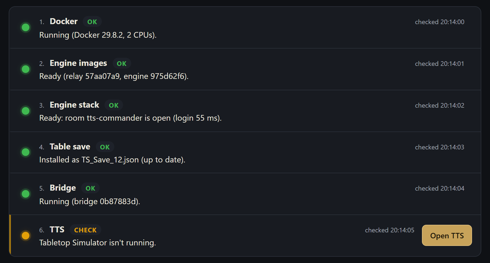
REAL PAGE · EXAMPLEThe TTS light with its Open TTS button.
Reference
Good to know
Privacy
Everything listens on your own PC only (127.0.0.1). Nothing is opened to the internet; TTS's own multiplayer is how friends reach the table.
Card pictures come from Scryfall. The status page only works on the PC running the companion.
Where things are
logs\companion.log and logs\bridge.log in the MTG folder
The table save: Documents\My Games\Tabletop Simulator\Saves, as a TS_Save_N.json named "MTG Table (rules engine)"
The companion's own notes: %LOCALAPPDATA%\MTG Companion
Saving over the table
If you save your own game over the table save, the companion treats that file as yours: a newer table then goes to a new save number beside it, and yours is kept.
Not built (yet)
Mac and Linux: no version. The companion is Windows-only.
Code signing: the .exe isn't signed, hence the SmartScreen warning.
Updates while the project is private: need a GitHub token, or a new zip from the owner.
No "start with Windows" option and no settings screen: behaviour is fixed.
The lights don't watch for TTS crashes, graphics-driver resets or memory use.
About the pictures in this guide
The status-page pictures are the companion's real page (built from companion/src on 2026-11-12, served by the
real app and captured with headless Edge). Where marked REAL PAGE · EXAMPLE, the lights were fed example
values for a friend's package, using the exact sentences from the code. The unedited capture is from the developer's PC, which
runs in "home mode" (no table-save step) and in read-only "observe" mode (right).
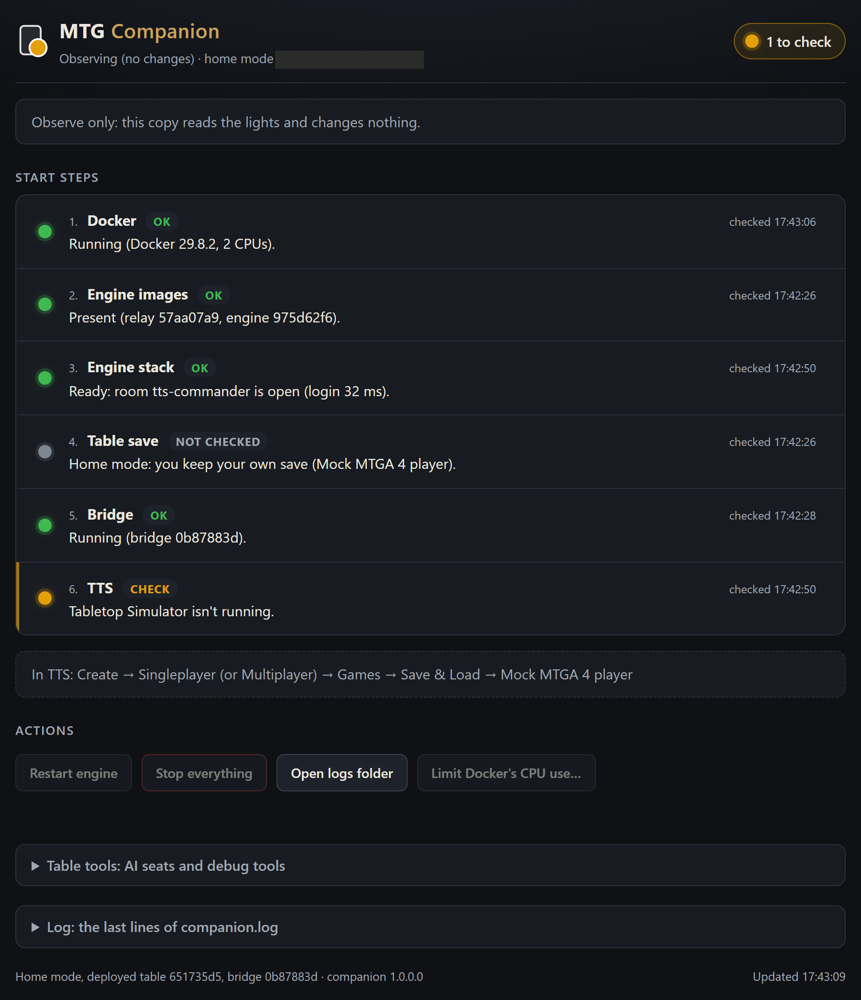
REALUnedited capture, 2026-11-12, observe mode on the developer's PC (TTS was closed, so its light is amber).